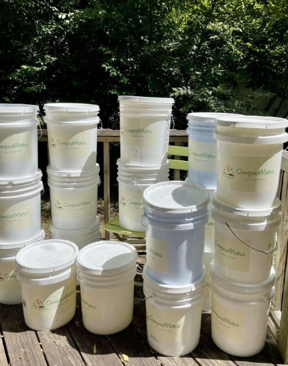
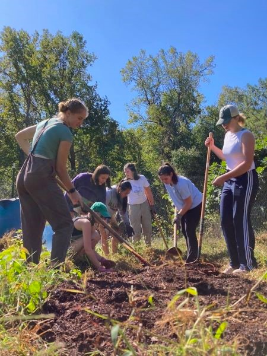

Off-campus UNC-CH students often face burdens to composting, and community gardens often need food scraps. CompostMates meets these needs and creates a new resource for our Chapel Hill community.
CompostMates enriches hundreds of pounds of fresh, organic produce. With the help of our food scraps, our community partners distribute over 4000 pounds of food to hundreds of people in our town each year.
